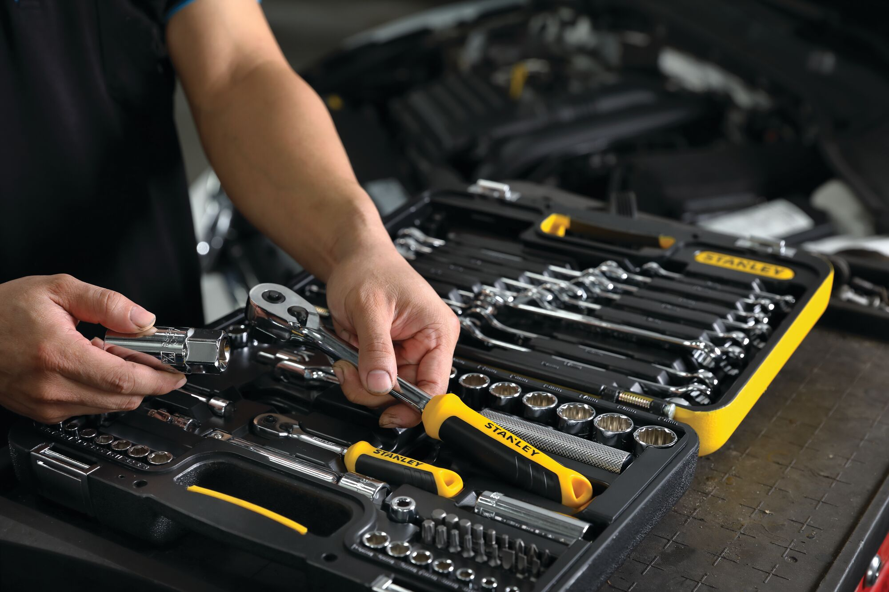
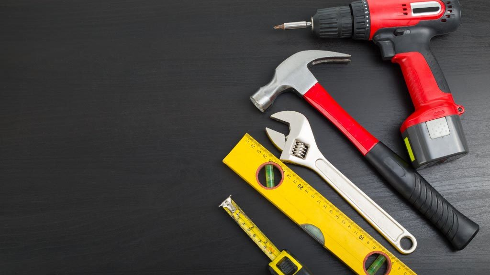
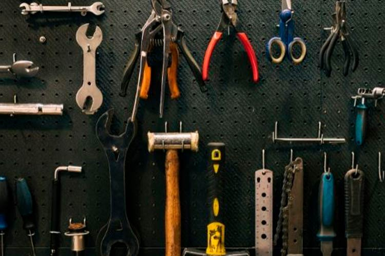

¿Por qué existe?
La festividad del Día de la Herramienta se originó en un pequeño pueblo rural donde las herramientas eran muy importantes para la vida diaria. Hace muchos años, durante una gran sequía, el pueblo se vio obligado a trabajar juntos para cavar un pozo profundo para conseguir agua.

Tradiciones
Las personas podrían intercambiar sus herramientas con sus vecinos, amigos o familiares, lo que les permitiría experimentar con diferentes herramientas y aprender más sobre su uso.

dia de la Herramienta en mi familia
Si tuviera que celebrar el Día de la Herramienta, me gustaría organizar un evento comunitario en el que todos los vecinos del barrio pudieran participar. Me encantaría reunir a las personas para compartir sus herramientas y enseñar a los demás cómo usarlas correctamente.
